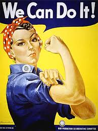
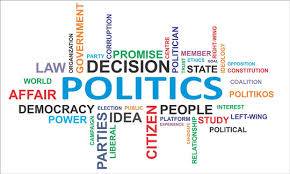
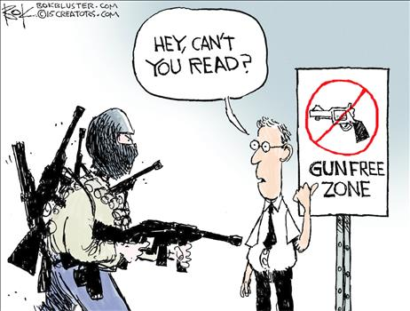
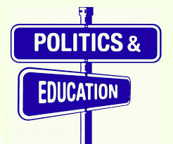

Vote for Courtney for better rights
Why You Should Elect Courtney Smith For President
Make sure you vote. Voting is very impoortant. If you want change vote for who you think can change your life in a positive way. I think that we need to vote wisely for a better lifestyle.
It’s tough out there for a voter—candidates from both parties have a lot to say about countless topics. So we asked our readers what matters most to them and got the answers straight from the presidential hopefuls themselves.
Feminism I support feminism because women can do the same things as men. If we want the same equal pay as men we can do it. Thats why I'm here to get equal rights.So this is the year we will have equal rights for women.
Gun control is a problem that has been affecting the United States. People die because of random people having access to guns.I want to protect people,but guns are not the answer. I get that people try to protect their family,but guns can kill people and we don't want to see an increase in death.If somebody wants to work with guns go to the army or become a police officer,but you got to know when to use it.
Education is important and I'm here to prove it.In schools kids aren't taught the right way. I want kids to be able to go to college for free. We have so much poverty in the United States because college cost so much.Kids that want to have a career instead of working at a dead-end job at McDonalds you could work at your dream job.
